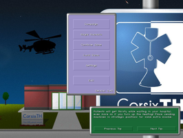
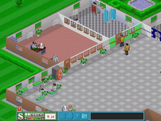
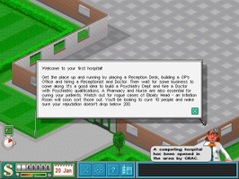

Theme Hospital
Dieser Artikel wurde für die folgenden Ubuntu-Versionen getestet:
Ubuntu 14.04 Trusty Tahr
Zum Verständnis dieses Artikels sind folgende Seiten hilfreich:
CorsixTH ist eine Spiel-Engine für Theme Hospital - benötigt werden die Originaldaten des Spiels. Alternativ kann DOSBox verwendet werden.
Im Spiel selbst muss ein Krankenhaus entworfen, unterhalten und verwaltet werden. Neben der Versorgung der Patienten und dem bei Laune halten des Personals gibt es weitere Aufgaben, die auf den Spieler warten. Die Planung des Krankenhauses und die vom Spieler getroffenen strategischen Entscheidungen machen den (Miss)Erfolg aus.
|  |
| Menü |
|  |
| Spielszene |
|  |
| Spielszene (DOSBox) |
Voraussetzungen¶
Um die Spiele-Engine CorsixTH  verwenden zu können, gibt es mehrere Möglichkeiten.
verwenden zu können, gibt es mehrere Möglichkeiten.
Playdeb¶
Der einfachste Weg ist es, wenn man die Paketquelle von PlayDeb: ins System einbindet [1] und die Engine anschließend installiert [2]:
corsix-th (PlayDeb)
 mit apturl
mit apturl
Paketliste zum Kopieren:
sudo apt-get install corsix-th
sudo aptitude install corsix-th
Hinweis!
Fremdpakete können das System gefährden.
Im nächsten Schritt werden die Spieldaten benötigt. Nachdem diese aufgespielt wurden, kann die Engine unter "Spiele → CorsixTH" aufgerufen werden.
Quellcode¶
Alternativ kann der Quellcode zur Erstellung der Spiele-Engine auf dem eigenen PC verwendet werden.
Vorbereitung¶
Hierfür werden die folgenden Pakete benötigt [2]:
build-essential
cmake
git
liblua5.1-0-dev
libsdl2-dev
libsdl2-mixer-dev
timidity
libfreetype6-dev
libluajit-5.1-dev
luarocks
mit apturl
Paketliste zum Kopieren:
sudo apt-get install build-essential cmake git liblua5.1-0-dev libsdl2-dev libsdl2-mixer-dev timidity libfreetype6-dev libluajit-5.1-dev luarocks
sudo aptitude install build-essential cmake git liblua5.1-0-dev libsdl2-dev libsdl2-mixer-dev timidity libfreetype6-dev libluajit-5.1-dev luarocks
Anschließend die folgenden Befehle ausführen [3] [4]:
sudo luarocks install lpeg sudo luarocks install luafilesystem
Durchführung¶
Den Quellcode entweder von der Projektseite als Archiv herunterladen und entpacken [5] oder via Git auf den Computer bringen [3]:
git clone https://github.com/CorsixTH/CorsixTH
Anschließend in den Ordner wechseln und das Spiel kompilieren [6]:
cmake .
Weitere Paramter können übergeben werden.
DOSBox¶
Zur Verwendung des Spiels mit DOSBox die CD einbinden und aus dem Programm heraus die SETUP.EXE starten. Nach der Installation kann das Spiel über HOSPITAL.EXE gestartet werden [7].
Spieldaten¶
Benötigt wird der Ordner, welcher unter anderem die Unterordner ANIMS und LEVELS enthält - meist lautet der Name HOSP. Die Demoversion bietet nur einen eingeschränkten Funktionsumfang.
Demo¶
Die Spieledaten aus dem Demo.zip  können verwendet werden. Das Archiv nach dem Herunterladen entpacken [5] und beim ersten Start der Spiele-Engine in das Verzeichnis navigieren.
können verwendet werden. Das Archiv nach dem Herunterladen entpacken [5] und beim ersten Start der Spiele-Engine in das Verzeichnis navigieren.
Gog.com¶
Die Version von gog.com nach dem Erwerb herunterladen und mittels innoextract an die gewünschten Inhalte gelangen [8] [3]:
innoextract setup_theme_hospital_2.0.0.5.exe
Den neu entstandenen Ordner apps nach HOSPITAL oder einem anderen beliebigen Titel umbenennen (Leerzeichen der Einfachheit halber vermeiden) und in das Spieleverzeichnis (z.B. ~/Spiele) verschieben. Beim Start der Engine zum Ordner navigieren.
PlayOnLinux¶
Über das Wine-Frontend PlayOnLinux die Schaltfläche "Installieren" [9] anwählen und nach dem Installationsskript für "GOG.com-Theme Hospital" suchen. Nun den Anweisungen des Skripts folgen und das Spiel installieren.
Konfiguration¶
Über "Settings" gelangt man zum Einstellungsmenü. Hier kann die Auflösung sowie die Spielsprache angepasst werden. Alle Konfigurationsdaten werden im Ordner ~/.config/CorsixTH/ abgelegt.
Tastenkürzel¶
| Tastenkürzel | |
| Taste(n) | Funktion |
 | Karte scrollen - schneller mit Strg |
| 1 - 5 | Spielgeschwindigkeit ändern. |
| F1 - F9 | Info-Bildschirme |
| P | Pause |
Handbuch¶
Dsa Handbuch kann in englischer Sprache aus der Bibliothek von gog.com heruntergeladen werden. Alternativ replacementdocs.com aufrufen.
Problembehebung¶
GOG.com¶
Die Version von gog.com startet, aber verlangt nach der CD. Das Problem besteht darin, dass DOSBox bereits eingerichtet ist und eine eigene Konfigurationsdatei mitbringt. In diesem Fall - wie unter DOSBox beschrieben - die passende Konfigurationsdatei laden. Der Aufruf für dosboxTH.conf lautet [7] : dosbox -conf dosboxTH.conf HOSPITAL.EXE
Ein weiteres Gog.com-Problem: Bei 2 Monitoren wird es in der Mitte von beiden Monitoren angezeigt (kein geklonter Desktop).

Infobox¶
| CorsixTH/Theme Hospital | |
| Genre: | Wirtschaftssimulation |
| Sprache: |  |
| Veröffentlichung: | 1997 |
| Publisher: | Electronic Arts |
| Systemvoraussetzungen: | Pentium 75MHz Prozessor, 8 MiB RAM (16 MiB unter Windows XP), 1 MiB Grafikkarte, 55 MiB Speicherplatz auf der Festplatte |
| Medien: | CD (1) / Download |
| Strichcode / EAN / GTIN: | - |
| Läuft mit: | nativ / DOSBox |
- Erstellt mit Inyoka
-
 2004 – 2017 ubuntuusers.de • Einige Rechte vorbehalten
2004 – 2017 ubuntuusers.de • Einige Rechte vorbehalten
Lizenz • Kontakt • Datenschutz • Impressum • Serverstatus -
Serverhousing gespendet von